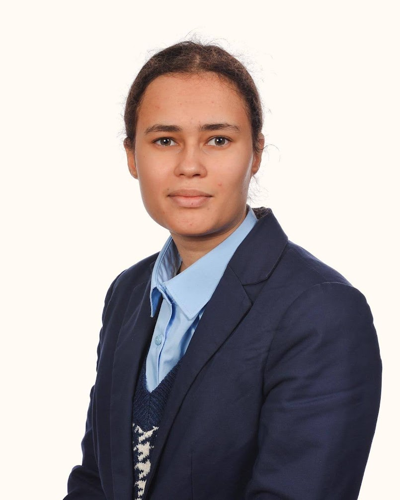

| Github | Microsoft Learn |
|---|
My name is Laura Bonnelame, and I am a final year Computer Science BSc student at the University of Exeter. I am based out of London primarily, and Exeter during the completion of my university course. I am aiming to obtain either a graduate job or a place on a master's course in software engineering or game design/programming.
I am proficient in programming languages such as CSS, HTML, Python and C++. Furthermore, I am currently completing the Free Foundational C# with Microsoft Certification available on FreeCodeCamp, with the goal of building a strong understanding of C#, for the purpose of learning how to use Unity. In addition to this, I have completed various solo and team projects throughout university, as well as recently completing three game projects in the Godot engine.
My enthusiasm for software engineering stems from the combination of being interested in maths and science, and passion for art and creativity. Coding allows me to combine the two and create various functional projects and see my ideas come to life. I aim to continue learning and improving my programming and problem-solving skills throughout the final year of my course and personal projects.
For more information, visit the CV and portfolio pages.
